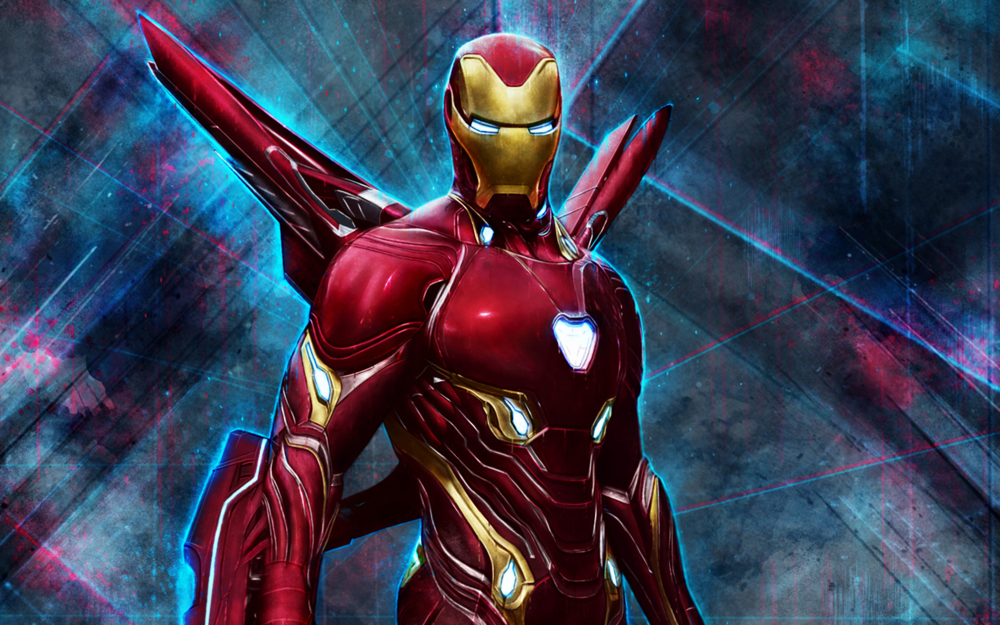
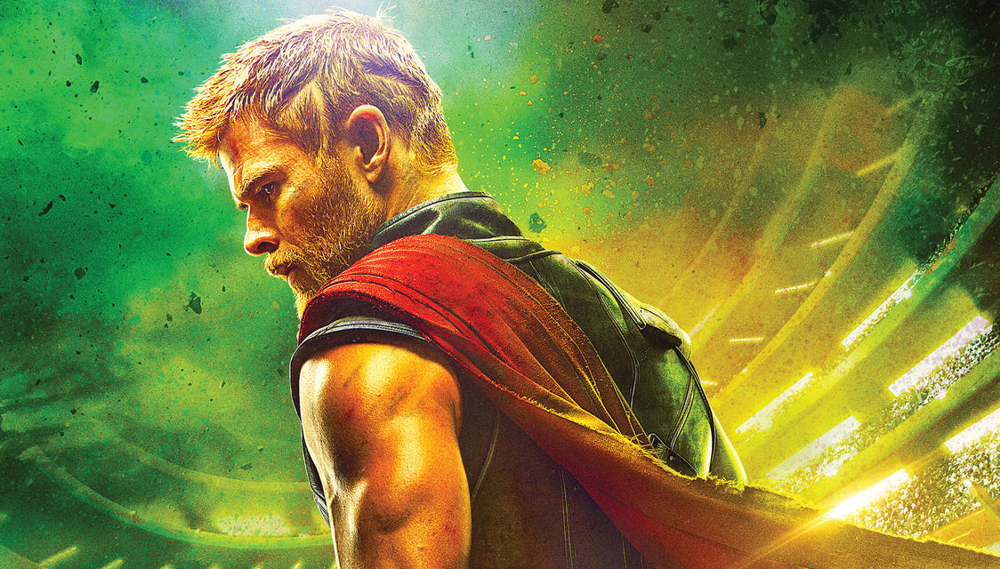

Iron Man
Iron Man is a superhero appearing in American comic books published by Marvel Comics. The character was co-created by writer and editor Stan Lee, developed by scripter Larry Lieber, and designed by artists Don Heck and Jack Kirby. The character made his first appearance in Tales of Suspense #39 (cover dated March 1963), and received his own title in Iron Man #1 (May 1968).
Captain America

Captain America is a superhero appearing in American comic books published by Marvel Comics. Created by cartoonists Joe Simon and Jack Kirby, the character first appeared in Captain America Comics #1 (cover dated March 1941) from Timely Comics, a predecessor of Marvel Comics. Captain America was designed as a patriotic supersoldier who often fought the Axis powers of World War II and was Timely Comics' most popular character during the wartime period. The popularity of superheroes waned following the war, and the Captain America comic book was discontinued in 1950, with a short-lived revival in 1953.
Thor
Thor Odinson, or simply Thor is a fictional character appearing in American comic books published by Marvel Comics. The character is based on the Norse deity of the same name, who is the Asgardian god of thunder who has the enchanted hammer, Mjolnir, which grants him the ability to fly and manipulate weather amongst his other superhuman attributes.